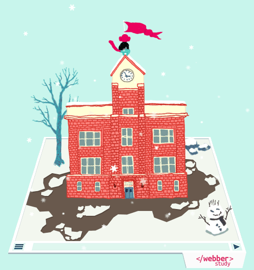

본문으로 바로 이동
페이지 설정으로 이동
메뉴로 이동
메뉴 보기
설정
검색
설정
검색
페이지 설정
책갈피 미 사용 중
책갈피 사용 중
글씨
작게
글씨
크게
어떠한 의견도 좋습니다. 웨버스터디가 더 나은 모습이 되도록 의견을 보내주세요.
이메일
Google+
©WebberStudy
강의
웹 제작 시작하기
소개
HTML, CSS로 할 수 있는 것들
웹 제작 준비하기
HTML 소개
HTML 시작하기
CSS 시작하기
HTML 초급 (기초)
HTML 기초 지식
head 요소
블록과 인라인
제목 요소
P, Pre, Br, Hr 태그 그리고 특수 문자
문구 요소들 1
a 요소와 id 속성
이미지 포맷
img 요소
목록 요소
의미없는 요소 div와 span 그리고 class 속성
HTML 주석
HTML 초급 정리
CSS 초급 (기초)
CSS 기초 지식
CSS 선택자 1
서체의 종류와 스타일
문자 스타일
background (배경 스타일)
border (테두리 스타일)
박스 모델 (margin과 padding)
list-style (리스트 스타일)
CSS 초급 정리
HTML 중급
웹 표준
doctype (독타입)
사용하지 말아야 할 요소들
문구 요소들 2
테이블 요소의 기본 구조
테이블 요소의 의미적 작성
테이블 요소와 레이아웃
CSS 중급
크로스 브라우징
CSS 디버깅, 개발자 도구
CSS 선택자 2
다중 CSS 스타일 시트와 우선 순위
display와 visibility
overflow, float, clear
float 레이아웃
table 스타일
HTML 고급
메타 요소 (meta 태그)
Form 요소 1 (form 태그와 input 태그)
Form 요소 2 (textarea와 input)
Form 요소 3 (button과 select, fieldset)
블로그
개발도구
1
©WebberStudy

웹을 배우는 첫 걸음!
웨버 스터디
최근 본 강의
float 레이아웃